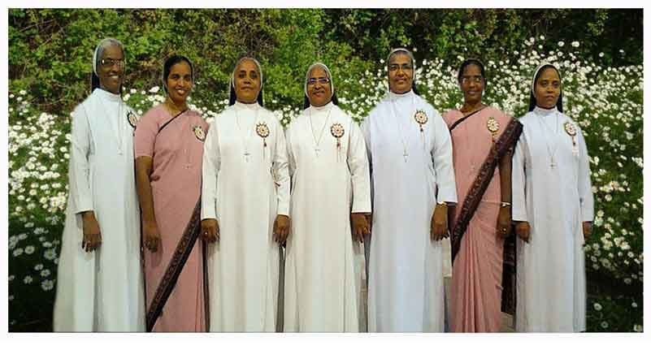
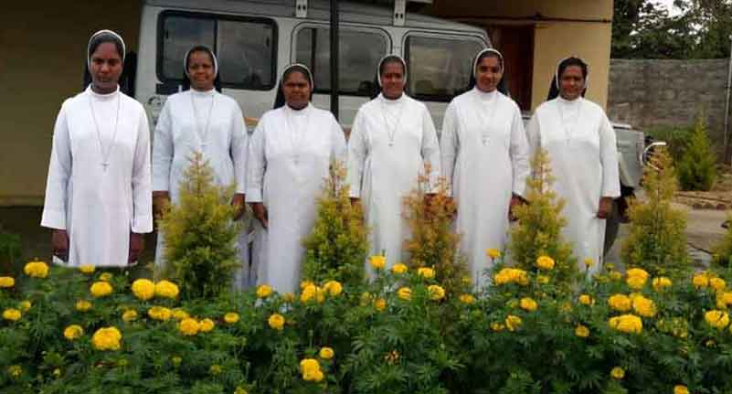

Our Lady of Mercy province Karnataka
Province day: September 24
Our Lady of Mercy Provincial House, Thambuchettypalayam Krishnarajpuram Bangalore - 560 036
Telephone 080-28493305, 28493396
email: ourladyofmercy@rediffmail.com
Provincial Superior : Rev. Sr. Alphonse
Provincial Councillors : Sr. Nisha Joseph, Sr. Sagaya Mary, Sr. Arul Sheeli
Provincial Procurator : Sr. Lilly Peter
Provincial Secretary : Sr. Shylla Mary
Region Under the Province : Mary Immaculate Region Mysore
Total convents : 38
Total Members : 265

Sacred Heart Province Andrapradesh
Province day: June 28
Sacred Heart Provincialate Guntupalli - 521 241, Vijayawada, Andhrapradesh
Telephone: 0866 – 2831350
email: shpfguntupalli@gmail.com
Provincial Superior : Sr. Gracy Antony
Provincial Councillors : Sr. Nirmala Chacko, Sr.Seraphia, Sr. Prathima Nayak, Sr. Sheela Nickolas
Provincial Procurator : Sr. Jane Antony
Provincial Secretary : Sr. Jammuna
Region Under the Province : Divine Mercy Region Orissa
Total convents : 37
Total Members : 205
St. Thomas Province Kerala
Province day: July 3
St. Thomas Provincialate Thannipuzha, Okkal P.O. Ernakulam Dist. Kerala-683 550
Telephone:0484-2465895
email: st.thomasprovince@gmail.com
Provincial Superior : Sr. Lillies Varghese
Provincial Councillors : Sr. Pushparani, Sr. Philomina Mathew, Sr. Mercilla, Sr. Treasa Antony
Provincial Procurator : Sr. Shiji Sebastian
Provincial Secretary : Sr. Sally
Region Under the Province : St. Joseph Region Maharashtra
Total convents : 21
Total Members : 151

Little Flower Province Tamilnadu
Province day: October 1
Little Flower V.P.House, Viralipatti, Vadakatupatti P.O. Sanarpatti Via Dindigul. Tamilnadu , 560052
Telephone: 0451 - 2051352
email: littleflower.2011@yahoo.com
Provincial Superior : Sr. Mary Stella
Provincial Councillors : Sr. Bindu T. Joseph, Sr. Rosali, Sr. Maria Selvi, Sr.Jeniffer
Provincial Procurator : Sr.Victoria Das
Provincial Secretary : Sr.Victoria Das
Total convents : 11
Total Members : 64